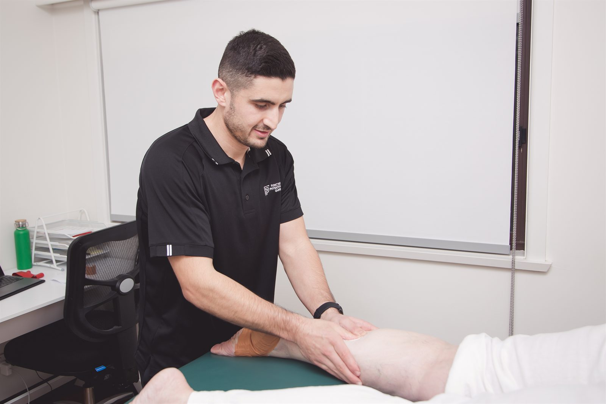
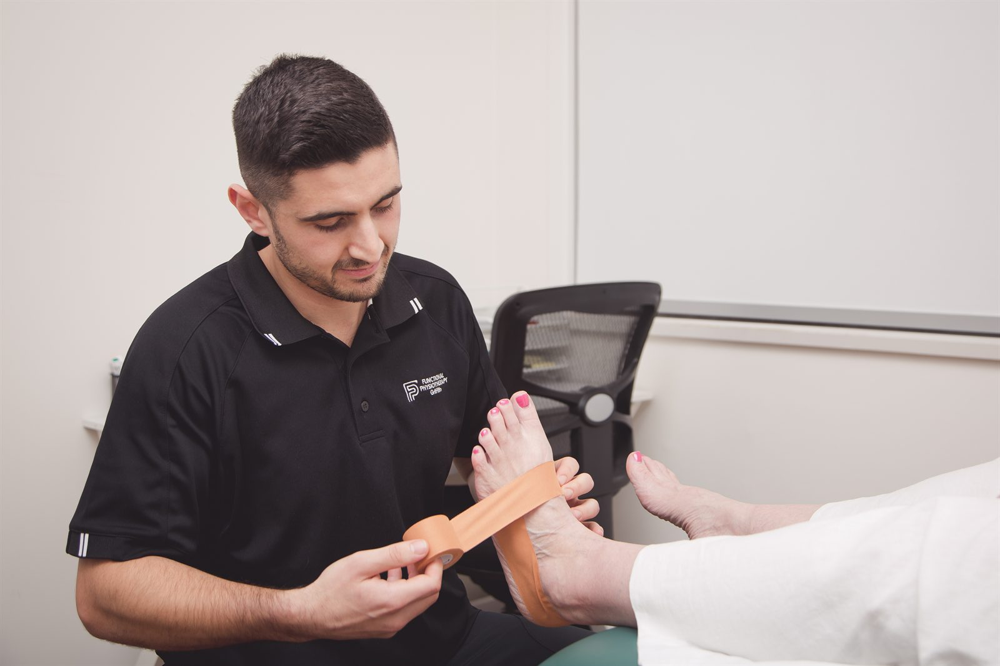

We assess and treat shin splints, runner’s knee, Achilles pain and heel pain in Dapto. Your symptoms and training history guide the plan, including whether you can keep running with changes or need a break.

Changes in training can contribute to running injuries. Previous injury, recovery, nutrition and bone health can also affect how much running you tolerate.
A jump in weekly kilometres, a new hill route or extra speed sessions can place more demand on a tendon, bone or joint than it can currently tolerate. Sometimes the training barely changes, but recovery becomes harder because of illness, poor sleep or too little food to support the amount of exercise. Assessment looks at these factors as well as the painful area.
For many muscle, tendon and joint problems, reducing the aggravating part of training allows rehabilitation exercises to begin. A suspected bone stress injury needs a different approach: stop running and seek assessment. The diagnosis matters before deciding how much activity is safe.
When running is safe, a shorter flat route or fewer sessions may be enough to start with. We will agree on what symptoms to monitor during a run and the following day. Running can be an important part of managing the week, so tell us what you most want to keep doing.
Watching you run can help us understand a painful movement. We interpret it alongside your symptoms, physical examination and training history.
Watching someone run, live and on video, shows how they land and move through each step. We may look at cadence, stride length or how the hip and knee move. If a change appears relevant to your symptoms, we can trial it and check the response. For example, a small increase in cadence can reduce some knee loads, but it is not needed by every runner.
There is a wide range of healthy running form. Changing your stride may be useful for a particular problem, but adding exercises or adjusting weekly distance may be more relevant. A gait assessment alone cannot identify the cause of every running injury.
Evidence for choosing running shoes solely by foot type or pronation is weak. Comfort and fit are useful considerations, alongside your symptoms and the running you do. A large change in heel drop, stiffness or sole height can alter the demands on your legs, so allow time to adapt. Orthoses may help with some conditions; we can discuss whether a trial is appropriate.
The plan depends on the diagnosis and the running you want to return to. We review symptoms and strength as distance and pace increase.
Assess the painful area and contributing factors, then agree on activity limits. Symptom treatment may help alongside changes to training.
Strength exercises target the affected area and any relevant deficits, such as calf endurance or quadriceps strength. The load progresses according to your response.
A structured walk-run or reduced-volume progression with clear rules on what an acceptable symptom response looks like during and in the 24 hours after each run.
Build distance, then add speed or hills as tolerated. Keep the strength work relevant to your injury and review the plan if symptoms return.
The loops around the Lake Illawarra foreshore and coastal paths towards Wollongong make it easy to add distance. The escarpment routes towards Mount Keira and Mount Kembla add a different demand: climbing asks more of the calf and Achilles, while descending requires repeated braking through the thighs and knees. Adding hills to an already busy training week may need a reduction elsewhere.
Changing from footpath to sand, or from flat bitumen to cambered roads and trails, changes the demands on your legs. Heat and humidity also affect how hard a familiar pace feels. Bring your usual routes and weekly distances to the appointment so advice fits the running you actually do.
Your goal might be a local parkrun personal best, a first half marathon or keeping a regular run in the week. We plan around that goal and discuss when an event date may need to change.

Stop running and seek prompt assessment if you have a sharply localised, tender spot on a bone, pain that worsens as you run, pain at night or pain that makes you limp. These symptoms can indicate a bone stress injury. Continuing to run on one can allow it to progress to a fracture and a much longer time away from running. See a doctor as well as your physiotherapist; seek urgent medical care if you cannot bear weight.
Tell your doctor if you have lost weight without meaning to, had repeated bone injuries or noticed periods becoming irregular or stopping. Any of these may warrant investigation. Low energy availability, where food intake does not meet the needs of exercise and everyday life, can affect bone health in runners of any gender and needs appropriate medical and nutritional support.
Running problems often overlap with these.
Diagnosis, treatment and staged return-to-sport rehabilitation for athletes at every level.
Read moreServicePrehab, post-operative rehabilitation and criteria-based return to sport after an ACL injury.
Read moreServiceDry needling for selected muscle-related symptoms, used alongside physiotherapy and exercise.
Read moreBook a running injury assessment to discuss the pain, your training and what to change next.